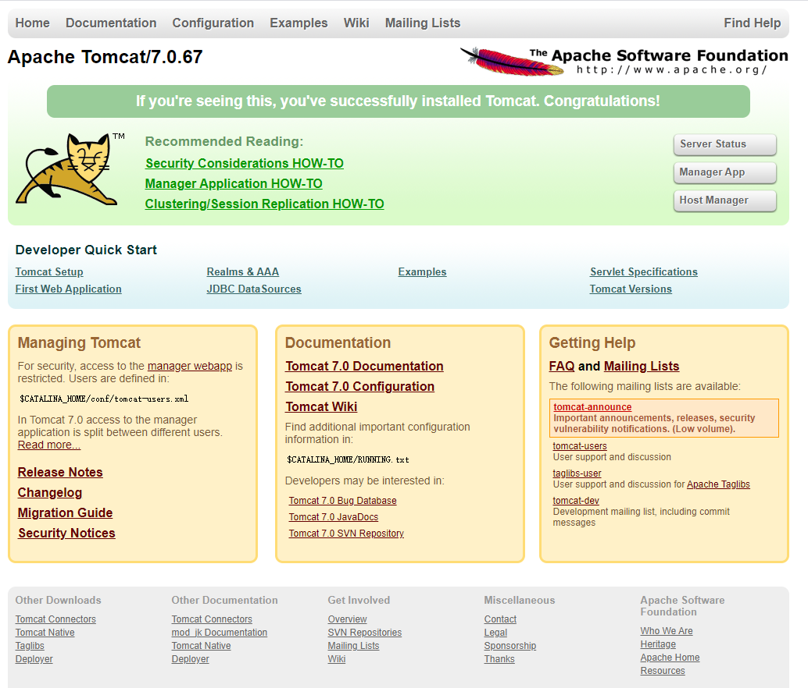

Tomcat的目录结构
解压下载好的tomcat可以看到如下文件结构：
bin：存放启动和关闭tomcat的命令的路径。
conf：存放tomcat的配置，所有的tomcat的配置都在该路径下设置。
lib：存放Tomcat服务器的核心类库（JAR文件），如果需要扩展tomcat的功能，也可将第三方类库复制到该路径下。
logs：这是一个空路径，用来保存Tomcat每次运行后产生的日志。
temp：保存Web应用运行过程中生成的临时文件。
webapps：该路径用于自动部署Web应用，将Web应用复制到该路径下，Tomcat启动时会自动将该应用部署到容器中。
work：保存在Web应用在运行过程中编译生成的.class文件。该文件夹可以删除，但每次启动Tomcat时系统都会再次建立该路径。
LICENSE等相关文档
运行Tomcat只需要系统有一个JAVA_HOME环境变量。不管是Windows还是linux，只要有这个环境变量并且指向JDK的安装路径即可。
启动Tomcat
对于Windows平台，只要双击Tomcat安装路径下bin目录中的startup.bat文件即可。
启动Tomcat后，打开浏览器并在地址栏输入http://localhost:8080/，浏览器出现此界面即表示安装成功。
配置Tomcat的端口
Tomcat的默认端口是8080，可以通过修改Tomcat的配置文件来改变服务端口，甚至可以让Tomcat同时在多个端口提供服务。
Tomcat的配置文件在conf目录下，控制端口的配置文件为conf下的server.xml文件。切记修改时只能用记事本或者vi等无格式的编辑器，不可以使用写字板。
在service.xml的70行左右的位置，可以看到以下代码
1 | <Connector port="8080" protocol="HTTP/1.1" |
其中port="8080"就是Tomcat提供服务的端口，将Tomcat修改为任意的端口，为避免与公用端口产生冲突，端口号最好大于1024。在这里我修改为8090.
修改完之后重启Tomcat，在浏览器地址栏输入http://localhost:8090/,即可再次看到Tomcat的界面。
Tomcat的控制台
在上图右上角有三个控制台：一个是Server Status控制台，一个是Manager APP控制台，一个是Host Mnager控制台。
Status用来监控服务器的状态，Manager控制台用来部署和监控Web应用，通常只需使用Manager控制台。
控制台的用户名和密码是通过Tomcat的JAAS（JAAS的全称是Java Authentication Authorization Service（Java验证和授权API），它用来控制对Java web应用的授权访问）控制的。初始是没有用户的，所以无论输入什么都无法登陆。
webapps路径是Web应用的存放路径，而Manager控制台对应的也是一个Web应用，所以它的配置文件是webapps/manager/WEB-INF路径下的web.xml文件。
用户的配置也在其中，但是Tomcat采用文件安全域，添加控制台用户只需要修改conf路径下的tomcat-users.xml文件即可。
打开该文件在
1 | <tomcat-users> |
下方添加下列内容
1 | <role rolename="manager-gui"/> |
此处登录用户名和密码我都是用的manager，可以根据需要自行修改。
修改过后重启Tomcat点击控制台登录即可。
显示下图即表示登陆成功

Tomcat服务器状态